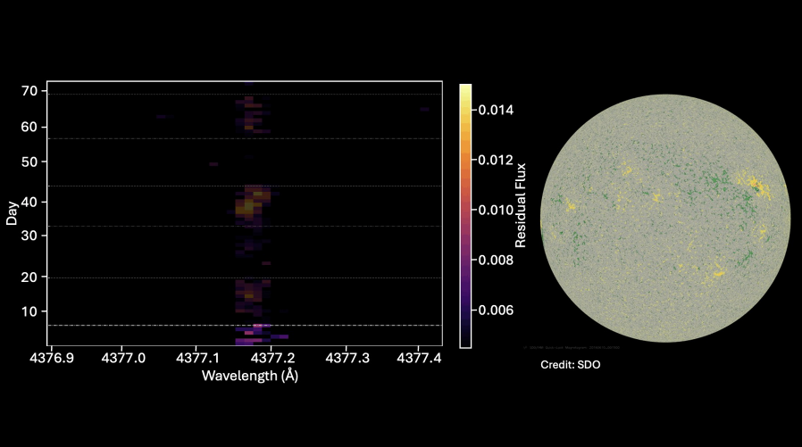

Research
Magnetic activity on stars distorts their spectral lines and adds noise to radial velocity measurements. I look for where in the spectrum that activity shows up, and use it to build better ways of measuring and removing it.
For a full list of papers, see my publications or CV.
The spectral fingerprints of solar faculae
Spectral Ratio Analysis · HARPS-N · SDO
Faculae are bright magnetic regions on the Sun's surface. They change the shape and strength of some spectral lines more than others. Spectral Ratio Analysis (SRA) divides each spectrum by a quiet, low-activity reference, so whatever is left over is the change caused by activity. This shows which lines respond most strongly.
In Hobbs et al. (2026), I used SRA on HARPS-N Sun-as-a-star spectra to show that the Fe I 4377 Å line tracks how much of the Sun is covered by faculae. These measurements match the faculae coverage measured directly from Solar Dynamics Observatory images. I also co-developed the SRA pipeline described in Costes et al. (2026).

Earlier work: ultraviolet spectropolarimetry
Polstar · Hot-star magnetic fields
For my undergraduate thesis, I generated synthetic Stokes I and V profiles for hot stars across a range of temperatures, metallicities, rotation rates and magnetic field strengths. I worked out the spectral resolution and signal-to-noise needed to detect magnetic (Zeeman) signatures in the ultraviolet. This set requirements for Polstar, a proposed NASA MIDEX mission, and forms Section 2 of Folsom et al. (2022).